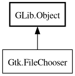

FileChooser
Object Hierarchy:

Description:
[
CCode ( type_id =
"gtk_file_chooser_get_type ()" ) ]
public interface FileChooser :
Object
All known implementing classes:
Content:
Properties:
Methods:
Signals:
Inherited Members:
All known members inherited from class GLib.Object